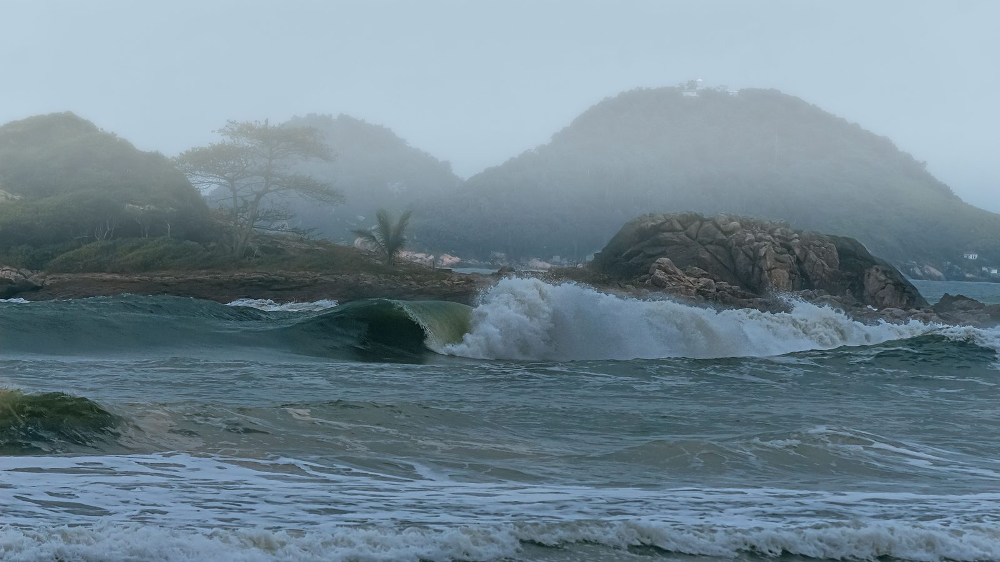

Santa Catarina · Clima
Santa Catarina · ClimaMassa de ar frio chega nesta quinta e derruba a temperatura em Santa Catarina até domingo
O frio que abriu este fim de semana, com geada ampla.
Um ciclone extratropical em alto mar deixa as ondas entre 2,5 e 3,0 metros. O vento sul sopra com rajadas de 50 a 60 km/h, principalmente neste sábado. O órgão pede para evitar banho de mar, pesca e navegação.
Em 30 segundos · Modo de Leitura, formato original Santa Informa
A Defesa Civil de Santa Catarina emitiu na manhã deste sábado, 22 de agosto, um aviso de mar agitado e risco de ressaca que vale até a segunda-feira, 24.
A causa é um ciclone extratropical em alto mar, longe da costa.
A ondulação vem do sul e varia entre 2,5 e 3,0 metros perto da praia, com picos maiores mar adentro.
O vento sul tem velocidade média de 25 a 35 km/h, com rajadas de 50 a 60 km/h, principalmente no sábado.
O risco é moderado para ocorrências ligadas à agitação do mar. No sábado o mar fica agitado em todo o litoral. No domingo e na segunda, o aviso se concentra do Litoral Sul à Grande Florianópolis.
A recomendação é evitar navegação, pesca, esporte no mar e banho de mar, e não caminhar nem pedalar na orla quando a onda alcança a ciclovia.
Santa CatarinaPublicada em Redação Santa Informa

A Defesa Civil de Santa Catarina publicou às 9h30 deste sábado, 22 de agosto, o aviso marítimo número 151 de 2026. O texto fala em mar agitado e risco de ressaca por causa de um ciclone extratropical que se desloca em alto mar, bem longe da praia. O aviso vale de sábado até a segunda-feira, dia 24.
Segundo o boletim, a ondulação é de direção sul e fica entre 2,5 e 3,0 metros perto da costa, com picos maiores em alto mar. O vento sul acompanha, com velocidade média entre 25 e 35 km/h e rajadas de 50 a 60 km/h, principalmente no decorrer deste sábado. O órgão classifica o risco como moderado para ocorrências ligadas à agitação marítima.
O boletim de cinco dias da Defesa Civil, o de número 234, ajuda a separar as coisas por dia. No sábado (22), o mar fica agitado em todo o litoral catarinense, com a mesma ondulação de 2,5 a 3,0 metros. Já no domingo (23) e na segunda (24), o mar segue agitado sobretudo no Litoral Sul e na Grande Florianópolis. O aviso de risco moderado emitido no sábado cobre esse trecho, do Litoral Sul à Grande Florianópolis, que fica logo ao sul de Itapema e da Costa Esmeralda.
A lista de recomendações é curta e direta: evitar navegação, pesca, esportes marítimos e banho de mar. O boletim pede também para não caminhar nem pedalar na orla quando as ondas estiverem alcançando a ciclovia. Ocorrências devem ser comunicadas pelo 199, da Defesa Civil, ou pelo 193, dos Bombeiros.
O mesmo boletim de cinco dias mantém o frio no fim de semana. No domingo, as mínimas no Litoral e no Vale do Itajaí ficam entre 5 e 11 graus, com geada ampla no estado, e as máximas à tarde entre 17 e 22 graus. Na segunda, a mínima no litoral fica entre 5 e 12 graus. O risco de desconforto térmico é moderado, e a recomendação é atenção redobrada com crianças, idosos, pessoas em situação de rua e animais.
O tempo firme não muda esse quadro. O monitoramento das 17h35 deste sábado registra céu limpo na maior parte do estado, com sol e frio ao mesmo tempo. A chuva só volta a aparecer na previsão a partir da quarta-feira (26), e primeiro no Grande Oeste.
O resumo de 30 segundos está no topo e a versão completa é o texto acima. Aqui ficam as três leituras da casa sobre o mesmo assunto.
Clara, a otimista
Mar grosso com céu limpo dá uma das paisagens mais bonitas do ano no litoral. Dá para ver de longe, da areia seca, com casaco e café na mão, e ainda sobra assunto para a semana.
E vale reparar numa coisa boa: o aviso saiu de manhã, com altura de onda, velocidade de vento e prazo. Quem tem barco, quem pesca e quem ia levar a família para a água teve o dia inteiro para mudar o plano sem susto.
Seu Prudêncio, o criterioso
Merece atenção a diferença entre os dois boletins. O aviso de risco moderado fala do Litoral Sul à Grande Florianópolis, mas o boletim de cinco dias diz que no sábado o mar fica agitado em todo o litoral. Para quem mora aqui, isso significa que o sábado pede o mesmo cuidado, mesmo com o nome da nossa região fora da lista de risco.
Vale acompanhar também os pontos onde a faixa de areia já está estreita. Ondulação de sul de quase 3 metros com vento sul forte é a combinação que costuma jogar água na ciclovia e na base de escada de acesso à praia. Uma sugestão útil para quem tem embarcação no trapiche: conferir amarração e cabo antes do anoitecer, que é quando o vento fica mais chato de resolver.
Dito isso, o serviço está sendo bem feito. O boletim traz número, prazo, região e recomendação, e ainda separa o que vale por dia. Com informação nesse nível, o morador consegue decidir sozinho, e é exatamente para isso que o aviso existe.
Caco, o sarcástico
Onda de três metros e cinco graus de mínima. O inverno resolveu entregar o pacote completo justamente no fim de semana.
A Defesa Civil pediu para evitar banho de mar. Fica registrado que, com essa água, o pedido tinha grande chance de ser atendido sem esforço.
E tem gente que vai na orla tirar foto da onda no exato ponto onde a onda chega. Sempre tem.
Fontes: Defesa Civil de Santa Catarina, aviso marítimo nº 151/2026, de 22 de agosto de 2026 às 9h30, e boletim nº 234/2026 para os próximos cinco dias, de 22 de agosto às 5h. Quadro do fim de semana no monitoramento das 17h35. O frio que chegou antes está em matéria de 20 de agosto do Santa Informa.
Santa Catarina · ClimaO frio que abriu este fim de semana, com geada ampla.
 Santa Catarina · Clima
Santa Catarina · ClimaComo o órgão avisou da última virada de tempo.
 Santa Catarina · Clima
Santa Catarina · ClimaOutro ciclone, outro vento sul, no começo do mês.